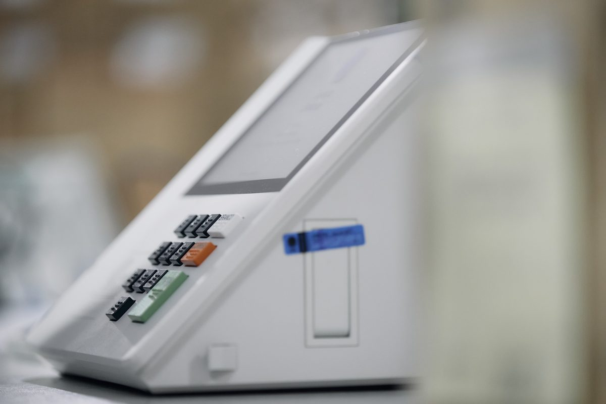
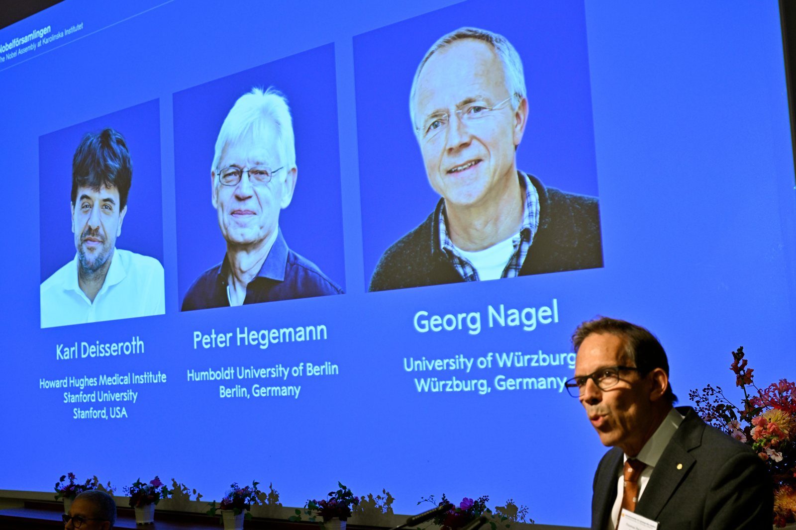
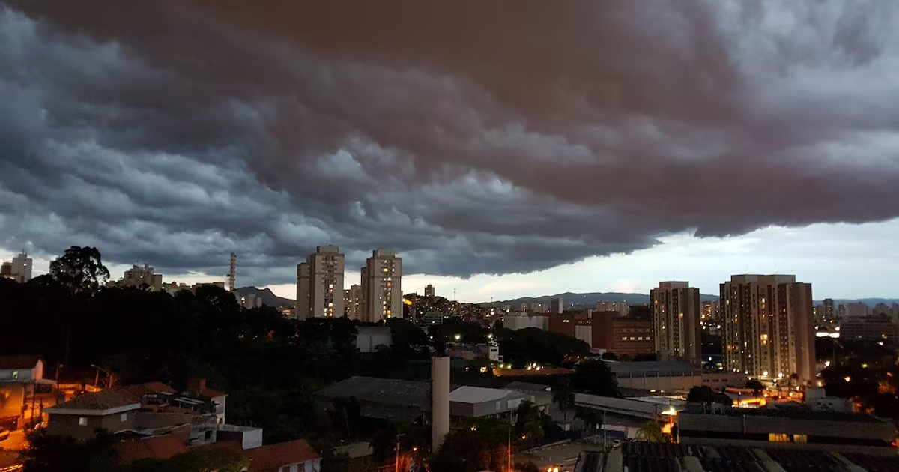

OpenAI adia lançamento do GPT-6.1 Astra por não atingir seus padrões de segurança
g1 (BBC): Modelo que navega na web e usa aplicativos sozinho “ficou aquém” em respeitar escopo e autorização; empresa também revisou incidentes na Austrália.
Atualizado às
g1 (BBC): Modelo que navega na web e usa aplicativos sozinho “ficou aquém” em respeitar escopo e autorização; empresa também revisou incidentes na Austrália.
Chamado de oportunista por Flávio Bolsonaro, o presidente transformou a PEC em teste para o partido do adversário e disse esperar que o Senado vote o texto hoje ou amanhã.
Ministério da Saúde controlado pelo grupo afirma que 60% das vítimas são crianças; forças apoiadas pela Arábia Saudita dizem avançar perto do Estreito de Bab al-Mandeb.
A defesa de Jair Bolsonaro pediu a visita depois do primeiro turno e também quer o regime normal de visitas de volta. A suspensão imposta em julho termina no domingo (11).
O S&P 500 subiu 0,58%, a 7.818,95 pontos, e o Nasdaq 0,45%, a 27.599,79. A chance de nova alta de juros pelo Fed em outubro caiu para 19,4%.
Eleitores reclamaram nas redes de aparecer como ausentes no site do tribunal. A mensagem agora informa que os dados estão “em processamento”.
Modelo já está disponível para desenvolvedores e chega aos produtos do Google com mais consistência entre imagens e edição por máscaras.
Depois do recorde de segunda, a bolsa teve dia de ajuste, mas segue acima dos 200 mil pontos. Banco do Brasil caiu 6,42% após rebaixamento do JPMorgan; Bradesco subiu 4,40%.
A federação União Progressista decidiu por unanimidade apoiar o senador contra Lula. Ronaldo Caiado, que foi o quinto colocado, também aderiu após encontro em Goiás.
Presidente ucraniano afirmou ter informações atualizadas sobre o plano russo e pediu que aliados, sobretudo EUA e Europa, enviem mais meios de defesa.
Programa de verificação para profissionais de cibersegurança ganha três níveis de acesso, incluindo Claude Opus 5.5, Sonnet 5.5 e Mythos 5.1, com menos bloqueios automáticos.
Estimativa para este ano sobe de 1,9% para 2,1%; para 2027 cai de 2,0% para 1,7%. Instituição diz que juros altos limitam crédito, consumo e investimento.
Dois navios foram atingidos a cerca de 112 km de Byala; um afundou e o outro, com grãos, teve a tripulação resgatada. Autoria ainda não está clara.
Conselho aprovou redução de capital de até R$ 35 bilhões, nova classe de ações preferenciais e programa de units; assembleias estão marcadas para 30 de outubro.
Exportações subiram 12,9%, puxadas por petróleo e vendas à União Europeia; ainda assim, o governo reduziu a projeção de saldo de 2026 para US$ 84,4 bilhões.
Relatório publicado após investigação aponta que bots autônomos derrubaram o Wikidata Query Service em maio com downloads em massa; OpenAI não comentou.
Tribunal diz que a falha atingiu só o módulo que gera os arquivos do site de resultados, sem afetar a apuração, e rebate boatos de fraude nas redes.

Fazenda diz que o dinheiro será repassado aos bancos, que devolvem os valores entre 9 e 14 de outubro; a partir de hoje sites e apps de apostas saíram do ar.
Candidato do PL afirma que União Brasil e PP também discutem adesão; à tarde, recebe em Goiânia o apoio de Caiado e de Daniel Vilela.
Índice chegou a 209,5 mil pontos na máxima e virou para queda com Petrobras, Vale e Banco do Brasil; analistas falam em ajuste após a alta de 7,7%.
Hanning, de 80 anos, comandou o BND até 2005; seu antigo chefe de gabinete também foi detido, suspeito de repassar informações sigilosas por anos.
Função “Gemini Calling”, achada no código de um app, faria a IA falar ao telefone em nome do usuário; não há data nem previsão para o Brasil.
Sindicato estudantil fala em 450 mil manifestantes no país, 100 mil em Paris; polícia usou gás lacrimogêneo contra bloqueios de escolas.
Anticorpo monoclonal Niktimvo é indicado após falha de ao menos duas terapias e teve resposta global de 73,8% em estudo.
Ataque noturno, um dos maiores contra a capital russa, deixou seis feridos e danificou casas; Moscou já havia prometido intensificar ofensiva contra Kiev.

Conselho municipal discute regras de transparência e fiscalização; presidente do órgão diz que a autorregulação “desafia toda a razão” e promete ir à Justiça contra a SpaceXAI, que faltou.
Agência sanitária afirma que exames não acharam microrganismos ligados ao laboratório; hospital segue em quarentena e a causa da morte não foi confirmada.
Físico belga-americano da Universidade de Wisconsin-Madison usou o gelo do Polo Sul para rastrear as “partículas fantasma” e abriu caminho para um novo tipo de astronomia.
Instruções internas preveem uma “página para cada pessoa” da vida do usuário, com aniversários e grau de proximidade; a Meta não comentou.
Conversas ainda são preliminares e ocorrem dias após a visita de Xi Jinping à Casa Branca, em meio ao temor de nova corrida armamentista.
Homem que vivia na RD Congo chegou a Nairóbi no sábado; 28 contatos, entre familiares e profissionais de saúde, já foram identificados.

Assinantes do Google AI Plus perdem o acesso ao Pro; Deep Think passa a fazer parte do plano AI Pro.
Tecnologia textGrain esconde um sinal estatístico na escolha de palavras; detector não será público e a marca tem limitações.
Operação “Amanhecer do Iêmen” mira a costa do Mar Vermelho, o estreito de Bab el-Mandeb e Sanaa; EUA dão apoio de inteligência.
Comunicado conjunto condena “operações de influência maligna” atribuídas a Teerã e a seus aliados no hemisfério.
Para pesquisadores da Chatham House e da LSE, resultado reforça a política de Trump para a região; professora de Hull vê voto guiado por questões locais.
Maior alta da bolsa desde março de 2020 e maior queda do dólar desde 2018 vieram após a vantagem de Flávio no 1º turno.
Caiado formaliza apoio ao candidato do PL nesta terça em Goiânia; PT tenta reduzir a abstenção recorde de 21,08%.
Proposta reduz a jornada de 44 para 40 horas semanais, com dois dias de folga; aprovação exige 49 dos 81 senadores em dois turnos.
Alta de 8,32% sobre setembro de 2025, segundo a Fenabrave; carros e comerciais leves sobem 16,16% na comparação anual.
SUV mais caro da marca no país custa R$ 249.990 na versão a gasolina e R$ 299.990 na PHEV.

Reserva exige sinal de R$ 9 mil e vale só para clientes da marca; SUV híbrido plug-in deve custar menos de R$ 300 mil.

Karl Deisseroth, Peter Hegemann e Georg Nagel mostraram como usar luz para ligar e desligar neurônios no cérebro vivo.
Gigante gasoso em torno da anã branca HS 0209+0832 seria o primeiro planeta de segunda geração identificado; estudo saiu na Nature Astronomy.

Ferramenta TITAN-LSTM une dados de radar e rede neural, atualiza a previsão a cada cinco minutos e tem baixo custo computacional.
Cerca de 200 pessoas estão sob observação na região de Irkutsk; autoridades russas minimizam o caso e a causa da morte segue sem confirmação.
Chefe de Clima da ONU cita pesquisa com profissionais de saúde em cinco continentes, durante fórum preparatório da COP31 em Fiji.
Levantamento em seis países, divulgado no Dia Mundial da Meningite, mostra apoio alto à vacinação, mas pouco conhecimento sobre a doença.
Pesquisador mostrou como um agente comprometido espalha instruções a outros dentro da mesma rede; Google e Rapid7 já corrigiram.
Camada que traduz código Arm para x86 ainda exige ajustes em apps e jogos mais complexos; modelos com Snapdragon têm compatibilidade mais direta.
Detecção em tempo real será feita por empresas certificadas, que sinalizam vozes clonadas e rostos sintéticos aos participantes.